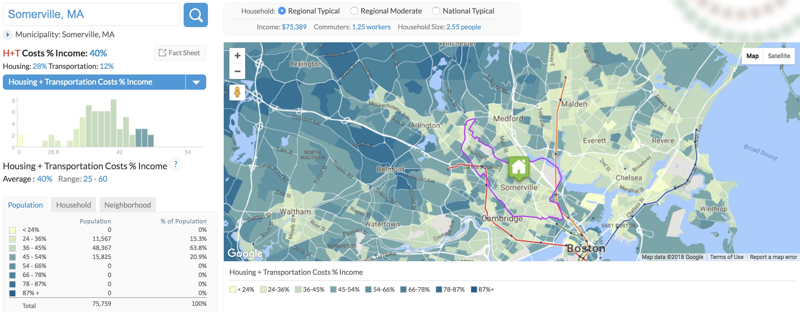

Hi my name is Alex Bob. I grew up outside of Pittsburgh but have been living in the Somerville, Cambridge, Boston area for the past 10 years. I went to Tufts University for undergrad and studied Political Science and Environmental Studies and worked as a research assistant on a community based participatory research study on traffic-related air pollution after graduating. Before starting at MIT, I was working in the Housing Division of the City of Somerville where I mainly helped to plan and implement the Mayor's Sustainable Neighborhoods Initiative, which was a community driven process to develop programs and policies to address the City's affordable housing issues. I am an avid biker and outdoors person.
 Housing and Transportation Index